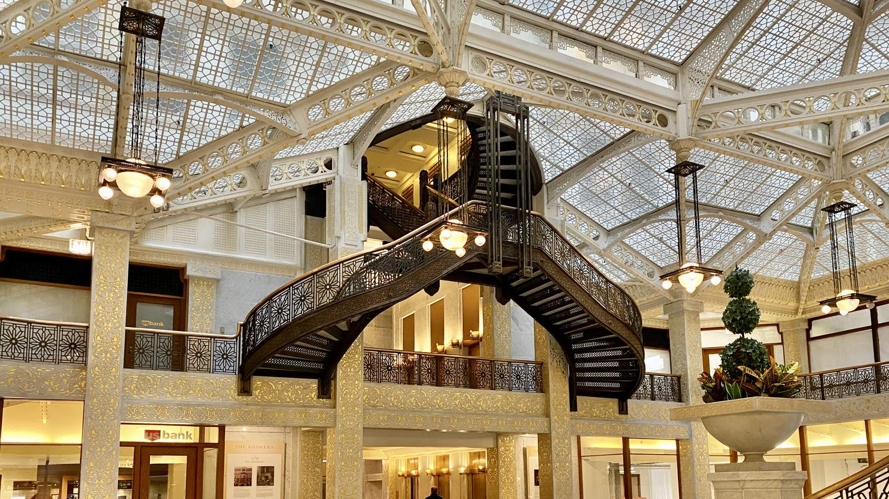
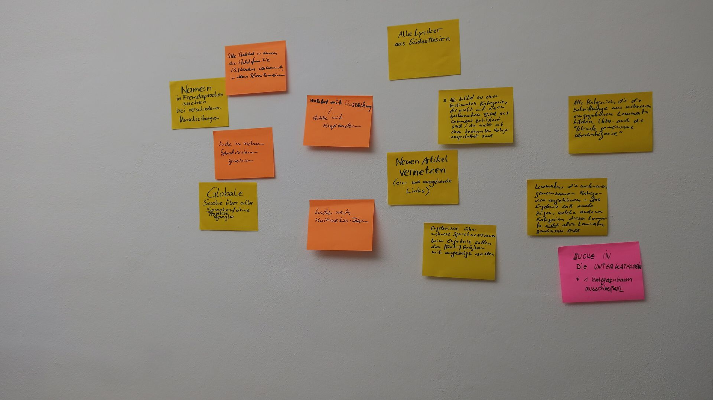
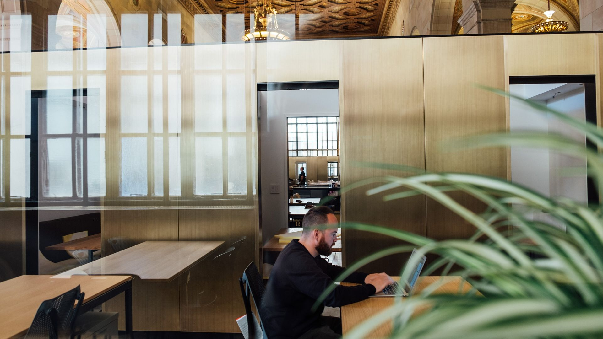

What kind of business this is
The one sentence a client would repeat
Who you work with, and what changes for them.

How we work
One workshop, a plan you can read
The first thing you do with a new client, in one sentence.

Case study
What we did for a client
The one result you can prove, with a number in it.
Worked with
Client One Client Two Client Three Client FourWhat we do
Three things, done properly
Two sentences. What connects these three, and what you deliberately do not do.
00
What this number counts
00%
What this number counts
00
What this number counts
Case study
What we did for a client
What they needed, in their words if you have them.
What you did, and what measurably changed. A number here is worth more than three adjectives.
- Before
- 00
- After
- 00
Recent work
Five projects, one line each
Two sentences. What these have in common, and which one to read first.
What clients say
One sentence somebody actually said. Specific beats warm.
A second sentence, from a different kind of client.
A third. If you only have one real quote, use one.
Questions
What does it cost?
Answer it. A page that will not say is a page people leave. See pricing.
How long does it take?
Answer it, with a range if you must.
What do you need from me?
Answer it. This is the one that wins the job.
What if it is not working?
Say what happens. A clear exit makes it easier to say yes.